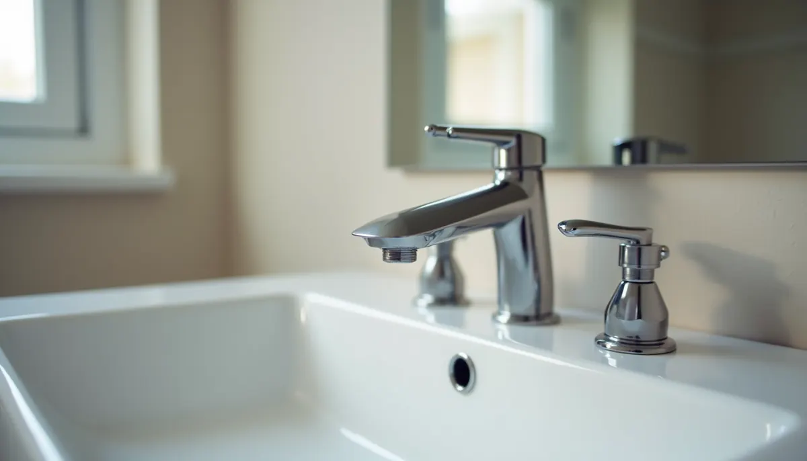
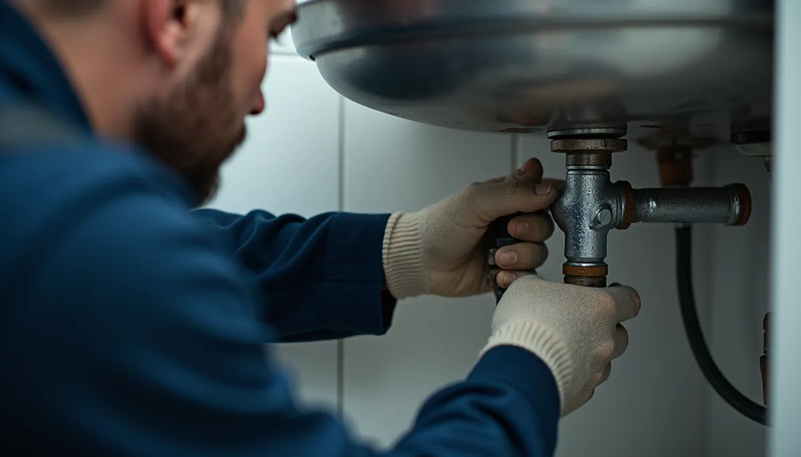
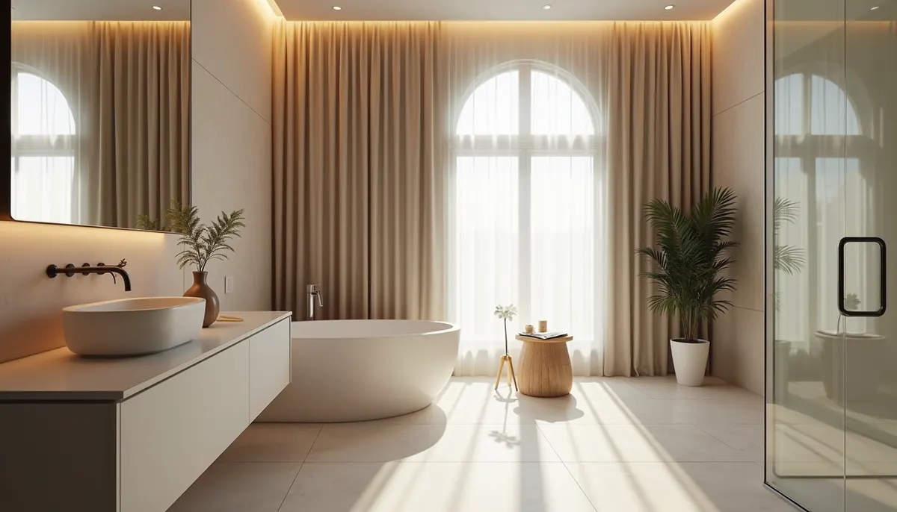

Renovating your bathroom can be a game changer for your home, adding value and comfort. However, choosing the right plumbing service is vital to ensure your project runs smoothly. Angle Stop Plumbing is the top choice in Murfreesboro and Middle Tennessee, and here’s why they stand out.
Expertise and Experience
With over a decade of experience in residential plumbing, Angle Stop Plumbing specializes in bathroom remodels. Their expert team is equipped to handle everything from minor fixture replacements to full plumbing overhauls. For example, in the last year alone, they successfully completed over 150 bathroom renovations, meeting safety standards and local regulations each time.
This expertise guarantees that your renovation project is not only efficient but also worry-free. With Angle Stop Plumbing, your plumbing needs are in capable hands.
Reliability and Professionalism
Angle Stop Plumbing is recognized for its friendly, professional service. As a Christian-owned and veteran-operated company, they take pride in serving their customers with integrity. They understand emergencies can happen at any time, which is why they offer 24/7 emergency services. Customers can count on them to respond swiftly when plumbing issues arise, ensuring peace of mind.
This reliability is what makes them unique. Their commitment to resolving plumbing problems effectively without sacrificing quality sets Angle Stop Plumbing apart from the competition.
Comprehensive Services
Angle Stop Plumbing provides a wide range of plumbing services to meet various needs:
- Fixture Repairs and Replacements: They can handle a variety of fixtures, from leaky faucets to outdated toilets.
- Pipe Repairs and Replacements: Ensuring that sewer lines are maintained can prevent unexpected hassles.
- Drain Cleaning and Repairs: They keep your drains flowing smoothly, preventing backups.
- Water Heater Services: Expert installation and maintenance make sure you have reliable hot water.
- Water Treatment and Filtration: They help ensure your water quality is safe and meets high standards.
Whether you're dealing with a small leak or planning a complete bathroom renovation, Angle Stop Plumbing has the right services for you.
Customer Focus
Customer satisfaction is at the heart of Angle Stop Plumbing's mission. They believe in offering value and transparency through their services. That’s why they provide upfront pricing, so you know what to expect before any work starts. This approach helps eliminate surprise costs later on.
Additionally, Angle Stop Plumbing offers membership plans that proactively address plumbing needs. Regular maintenance can prevent costly disasters before they happen, allowing you to focus on enjoying your newly renovated space.
Local and Trusted
Being a local company, Angle Stop Plumbing serves Murfreesboro and the surrounding areas. Their commitment to the community extends beyond just plumbing; they actively support local events and neighborhood initiatives.
Their strong reputation is backed by glowing customer testimonials. Many clients recommend Angle Stop Plumbing based on their consistent quality of work and exceptional customer care.
Why Choose Angle Stop Plumbing for Your Bathroom Renovation?
Stress-free Renovations
Managing a renovation can be stressful, but Angle Stop Plumbing works to minimize disruption. They efficiently handle the plumbing aspects, allowing you to focus on design choices and other project details. This thoughtful approach helps ensure your bathroom renovation proceeds smoothly and stress-free.
Preventing Water Damage
Proper plumbing is essential during renovations. Mistakes can lead to costly water damage, which many homeowners dread. Angle Stop Plumbing’s skilled technicians ensure that installations are executed correctly, reducing the risk of problems later. Their attention to detail is your safeguard against future plumbing issues.
Final Thoughts
Choosing the right plumbing service is critical for a successful bathroom renovation. Angle Stop Plumbing offers the experience, reliability, and comprehensive services that set them apart in the industry. Their dedication to customer satisfaction and proactive service guarantees a smooth renovation process.
Make Angle Stop Plumbing the first choice for your bathroom renovation. With their expertise, transforming your dream bathroom into reality is easy. You can rest assured knowing your plumbing needs are in knowledgeable hands.


